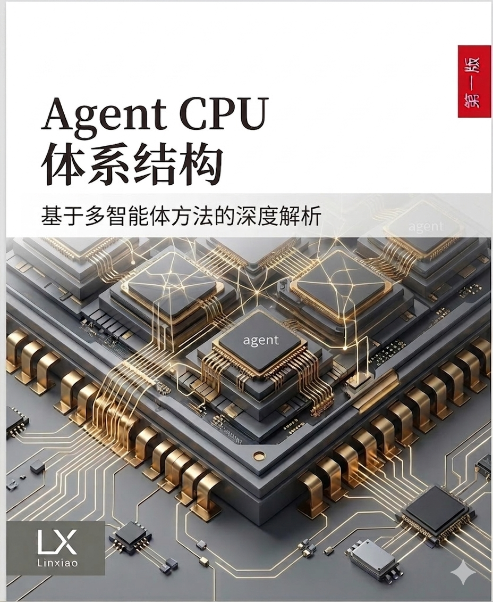

PART I
Chapter 1-2
学科基础
定义 Agentic workload，解释 Agent CPU 与 CPU、GPU、NPU 的边界。
Discipline
AI Agent 出现后，计算系统中出现了一类新的执行对象：由 Agent 围绕目标即时生成、即时验证、即时执行、即时回收的短生命周期逻辑。它们由任务流、证据链、工具调用图和状态变换共同组成。
Book Structure
教材从学科定义出发，逐步进入机器、运行时、传统架构映射和工程方法，目标是把“会回答”推进为“受约束、可检查、可改进地执行”。
定义 Agentic workload，解释 Agent CPU 与 CPU、GPU、NPU 的边界。
讨论 Super Domain、Agent Domain、任务模型、APU-IR、Memory/NoC。
讨论任务型 Agent、工具调用、长期记忆、安全边界和断点恢复。
从 ISA、Cache、ROB、Branch Prediction 到 Agent CPU 设计方法。
定义 benchmark、验证、课程实验和九天 APU v0.1 最小闭环。
Selected Chapters
从传统程序模型出发，说明目标、上下文、行动选择和反馈更新如何构成新的工作负载。
把系统拆分为 Super Domain 与 Agent Domain，让治理、权限和执行吞吐各归其位。
把 Agent 意图、任务图、预算、权限和 trace 变成可检查的软硬件契约。
区分上下文与记忆，定义 ledger、compact 事务、artifact preview 和恢复锚点。
借鉴 ROB 提交思想，把 Agent 侧输出约束为候选结果，由 Super Domain 审核提交。
把工作负载、证据链、恢复质量和长期记忆一致性纳入体系结构评价语言。
Core Abstractions
任务启动执行，证据提供支撑，投影塑造视图，权限和预算形成边界，trace 保留过程，候选提交给出可审查结果。
Read Online
